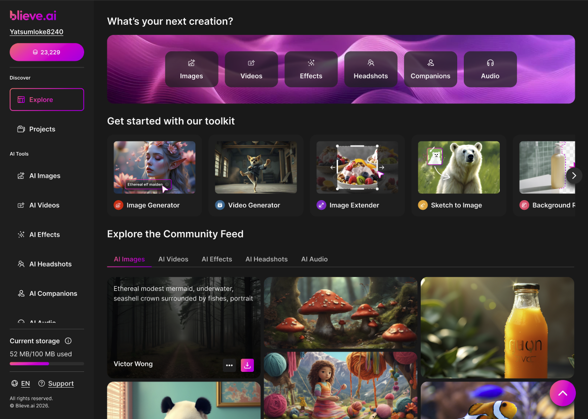
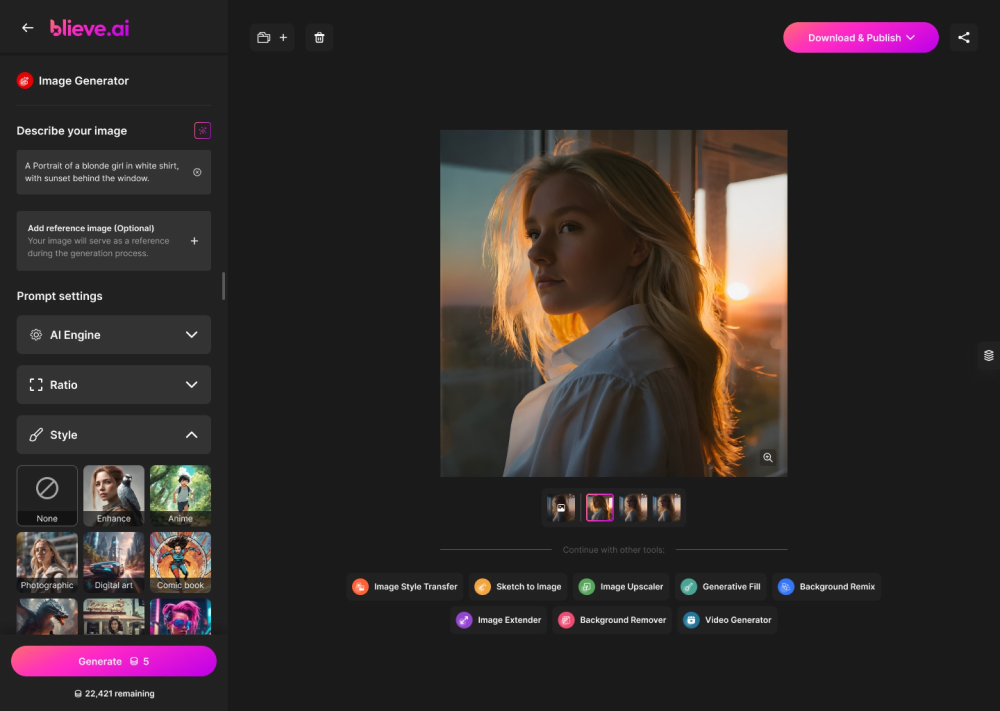
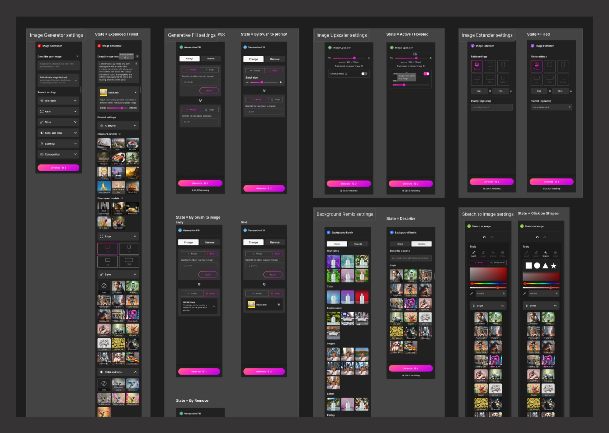
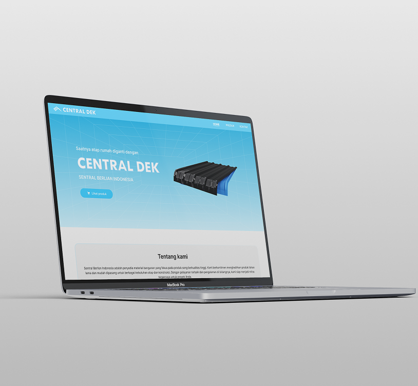
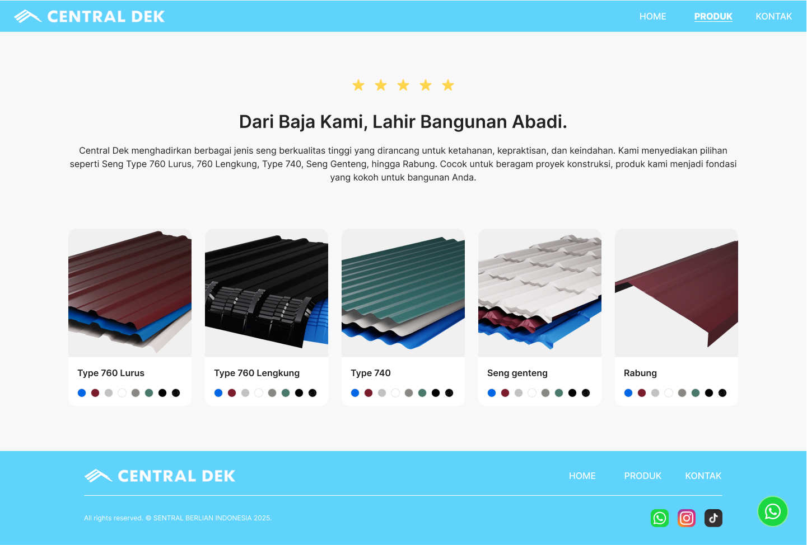
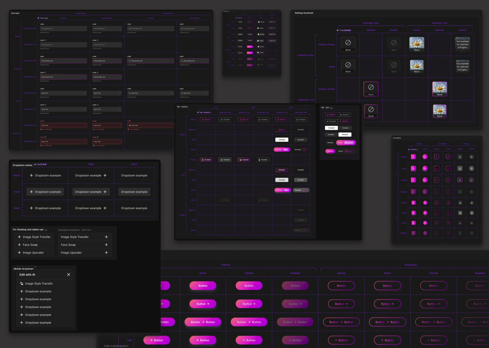
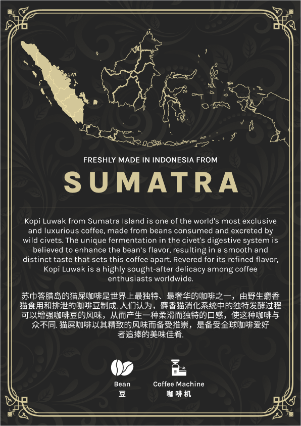
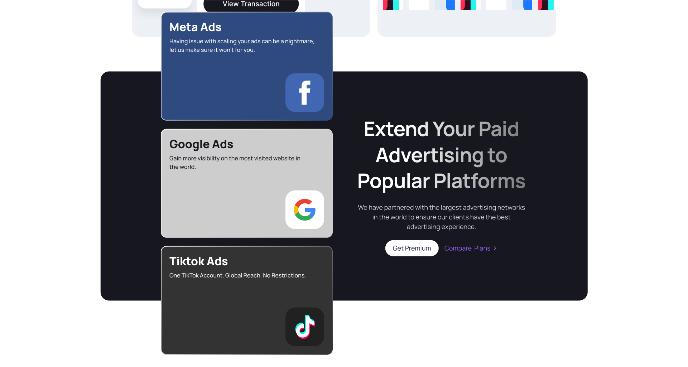
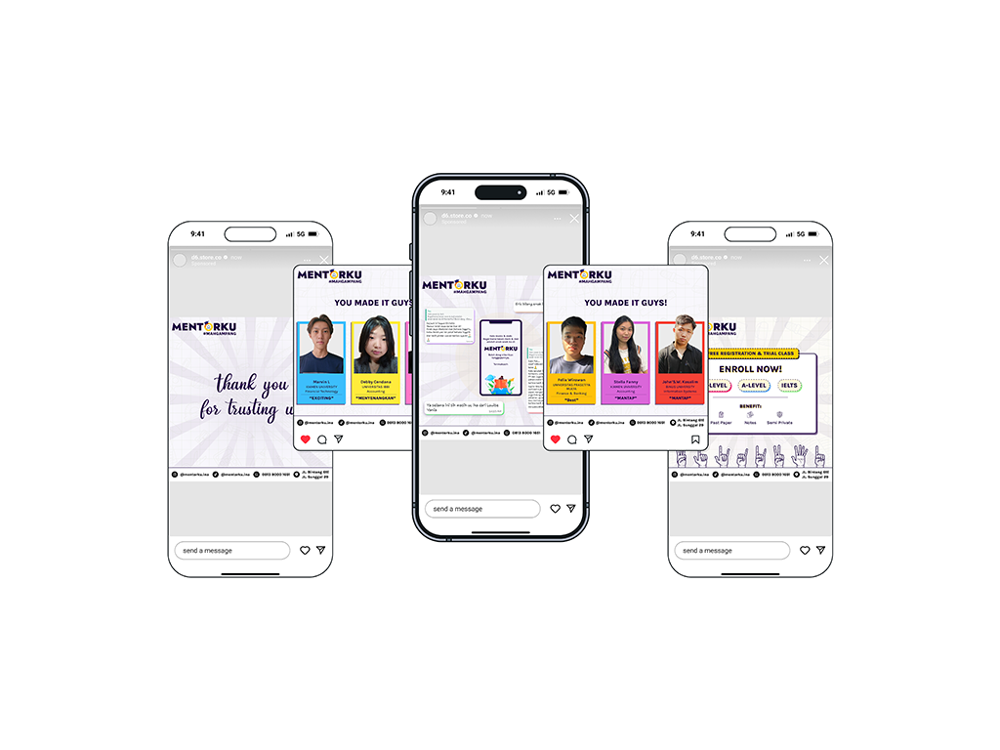

FUHH.IO — Designing an Interactive Live Streaming Experience
FUHH.IO is a live streaming platform focused on real-time interaction between streamers and viewers through live broadcasts, virtual gifting, and community-driven engagement features.
Inspired by modern creator platforms such as Kick, the platform combines streaming, monetization, and interactive challenge systems into a single connected experience designed to increase participation and engagement during live sessions.
My Role
Product Designer (UI/UX)
Responsible for:
- UX strategy and workflow design
- Live streaming experience design
- Login and onboarding flows
- User profile and account systems
- Checkout and monetization flows
- Gifting and challenge interactions
- Responsive web experience
- Design consistency across the platform
Goals
The project focused on creating a live streaming platform that felt:
- More interactive between viewers and streamers
- Easy to navigate during live sessions
- Community-driven and engaging
- Scalable for future social features
- Visually immersive without feeling overwhelming
The goal was not only to create a streaming platform, but to design stronger engagement loops between creators and their audience.
Background
FUHH.IO was created as an interactive streaming platform where users can watch streams, go live, send gifts, and participate in real-time engagement experiences.
One of the platform's core features was the challenge system, which allowed viewers to interact directly with streamers through gifting coins and virtual items during live broadcasts.
The platform included:
- Live streaming
- Viewer gifting systems
- Virtual coins and items
- Interactive challenge mechanics
- Stream discovery
- User profiles and account systems
- Checkout and virtual currency purchases
I was responsible for designing the complete end-to-end platform experience, including onboarding, live interfaces, monetization flows, account systems, and overall UI consistency.
Problem
Many streaming platforms focus heavily on content consumption, but provide limited interaction beyond chat and donations.
Some common issues included:
- Passive viewer experiences
- Overwhelming live stream interfaces
- Disconnected monetization flows
- Poor visibility for engagement features
- Complicated gifting interactions
This created friction during live sessions and reduced opportunities for deeper creator-viewer interaction.
The challenge was designing a platform that encouraged participation while keeping the streaming experience simple and intuitive.
Before vs After
Solution
Instead of focusing only on streaming functionality, the platform was designed around interaction and engagement.

The experience focused on:
- Encouraging viewer participation
- Simplifying gifting interactions
- Creating stronger creator-viewer engagement
- Reducing friction during live sessions
- Making monetization feel integrated into the platform experience
Key design directions included:
- Clear live stream hierarchy
- Simplified gifting interactions
- Persistent engagement components
- Scalable challenge system layouts
- Fast access to key actions during streams
- Consistent UI patterns across user flows
The goal was to make interactions feel natural without interrupting the viewing experience.
Discovery
During the discovery phase, I reviewed how existing streaming platforms structured their live experiences, monetization systems, and engagement mechanics.


I also conducted competitor research to better understand:
- Live stream interaction patterns
- Viewer engagement systems
- Virtual gifting experiences
- Monetization flows
- Creator-focused interaction mechanics
One common observation was that many streaming platforms prioritized content broadcasting more than audience participation.
Most interactions were limited to:
- Chat messages
- Basic donations
- Reactions
This created an opportunity to design a more interactive ecosystem where viewers could participate more actively through challenges, gifting systems, and real-time engagement mechanics.
Competitor Research
Kick
- Clean live streaming experience
- Creator-focused platform structure
- Simple stream viewing layout
- Limited engagement mechanics
- Viewer interaction relies heavily on chat
- Monetization experience feels basic
Twitch
- Strong community ecosystem
- Mature streaming infrastructure
- Multiple monetization methods
- Interface can feel overwhelming
- Navigation becomes cluttered
- Engagement systems feel fragmented
TikTok Live
- Strong gifting interaction system
- Fast-paced engagement loops
- High viewer participation
- Visually crowded interface
- Rapid interactions can overwhelm users
- Inconsistent interaction hierarchy
Research
The research focused on balancing engagement, usability, and monetization without overwhelming users during live sessions.

Key observations included:
- Viewers engage more when interactions feel immediate
- Simpler gifting flows improve participation
- Persistent engagement visibility increases interaction
- Clear hierarchy is critical during live viewing
- Fewer interaction steps improve real-time usability
One major insight was that engagement systems should feel integrated into the streaming experience rather than treated as separate features.
Challenges
One of the biggest challenges was balancing engagement-heavy features without making the live experience feel visually overwhelming.


Since live streaming environments already contain large amounts of real-time information, the interface needed to support:
- Stream viewing
- Live chat
- Gifting interactions
- Challenge participation
- Monetization flows
while still maintaining clarity and usability.
Another challenge was designing interaction systems that encouraged participation without distracting users from the main stream content.
Exploration
Multiple design directions were explored before finalizing the platform structure and interaction experience.


Explorations included:
- Sidebar chat vs floating chat layouts
- Compact gifting systems vs expanded interaction panels
- Minimal live UI vs engagement-heavy layouts
- Persistent challenge widgets vs modal-based interactions
- Simplified checkout flows vs multi-step purchases
The final direction focused on:
- Clear stream hierarchy
- Faster interaction flows
- Minimal friction during live sessions
- Strong visibility for engagement features
- Scalable layouts for future social features
This helped create a more immersive and interactive streaming experience while maintaining usability across the platform.
Design System
To maintain consistency across the platform, I established reusable UI patterns and scalable component structures for streaming, gifting, account systems, and monetization flows.

This included:
- Reusable live interaction components
- Unified modal and drawer patterns
- Consistent stream layouts
- Shared navigation structures
- Standardized checkout interactions
- Scalable UI behaviors for engagement systems
The system helped ensure the platform remained cohesive as new features and social interactions were introduced.
Design
The final design focused on creating a clean and immersive streaming experience while supporting real-time interaction across the platform.
The visual direction was intentionally designed to feel modern, energetic, and engaging without overwhelming users during live sessions.
The interface combined a minimal foundation with vibrant gradient accents to balance usability and entertainment-focused interaction.
The primary visual palette focused on:
- White as the core foundation for clarity and readability
- Blue gradients to create a modern and trustworthy streaming atmosphere
- Red gradients to emphasize energy, interaction, and live engagement moments
This combination helped create a visually dynamic experience while still maintaining strong hierarchy and usability during fast-paced interactions.
Key design decisions included:
- Stream-focused layouts with clear hierarchy
- Simplified gifting interactions
- Persistent engagement visibility
- Fast-access interaction controls
- Streamlined onboarding and account flows
- Integrated monetization experience
- Scalable challenge interaction system
- Clean layouts with energetic visual accents
- Modern gradient-driven highlights
- Consistent spacing and modular UI patterns
Every interface was designed to support real-time engagement while keeping the experience intuitive, immersive, and easy to navigate.







Outcome
The final platform created a more interactive streaming ecosystem that encouraged stronger participation between viewers and streamers.

By integrating gifting systems, challenge mechanics, and monetization flows directly into the live experience, the platform created a more connected and engaging environment compared to traditional streaming workflows.
The project also established a scalable design foundation that could support future social and engagement-focused features.
Key Takeaways
Designing FUHH.IO taught me how important interaction design becomes within real-time environments such as live streaming platforms.
Unlike traditional content platforms, live experiences require users to process multiple layers of information simultaneously, including video content, chat activity, gifting interactions, and engagement systems. Because of this, maintaining visual clarity and interaction simplicity became one of the most important aspects of the design process.
This project also reinforced the importance of balancing engagement and usability. While adding more interactive features can increase participation, too many simultaneous interactions can quickly overwhelm users if hierarchy and prioritization are not carefully designed.
Another major learning was designing monetization systems that feel naturally integrated into the experience rather than interruptive. By embedding gifting and challenge mechanics directly into the streaming workflow, the interaction experience felt more seamless and engaging for both viewers and creators.
Overall, this project strengthened my approach to designing:
- Real-time interaction systems
- Engagement-focused experiences
- Scalable social platform UI
- Monetization workflows
- High-density interface environments